Трансформатор
- Устройство трансформатора
- Принцип работы трансформатора
- Магнитопровод. Магнитные материалы
- Типы магнитопроводов
- Конструкция магнитопроводов
- Виды обмоток трансформаторов
- Обозначение трансформаторов на схемах
Трансформатор (от лат. transformo — преобразовывать) — электрический аппарат, состоящий из набора индуктивно связанных обмоток на каком-либо магнитопроводе или без него и предназначенный для преобразования посредством электромагнитной индукции одной или нескольких систем переменного тока в одну или несколько других систем переменного тока без изменения частоты систем(системы) переменного тока. Трансформатор предназначен для преобразования переменного напряжения одной величины в переменное напряжение другой величины. Трансформаторы преобразуют переменный, импульсный и пульсирующий ток. Если подвести к трансформатору постоянный ток, то получится лишь раскалённый кусок провода.
Трансформаторы постоянный ток не преобразуют!
Трансформаторы нашли широкое применение в радио и электротехнике и применяются для передачи и распределения электрической энергии в сетях энергосистем, для питания схем радиоаппаратуры, в преобразовательных устройствах, качестве сварочных трансформаторов и т.п.
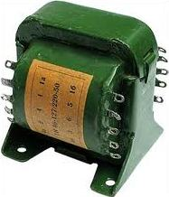
{kind=link}
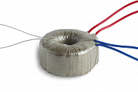
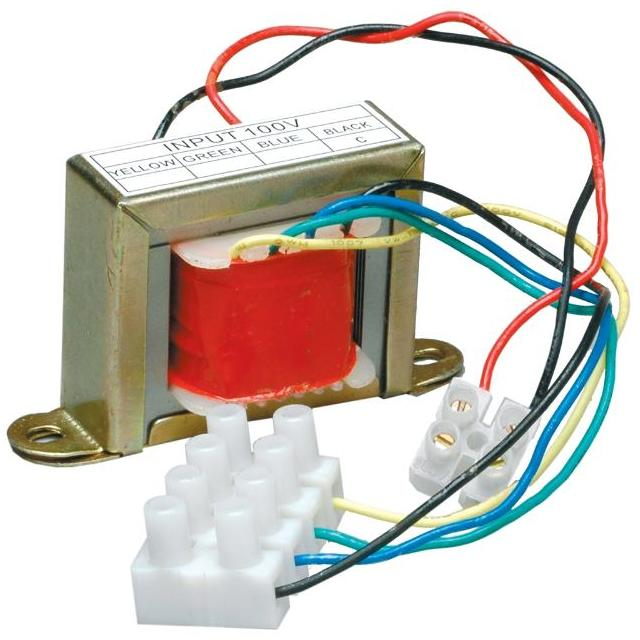
В бытовой электронике трансформаторы выполняют в основном две наиболее важные функции:
- Понижение переменного напряжения электрической сети 127/220В до уровня в несколько десятков или единиц вольт (5 – 48 и более вольт). Связано это с тем, что большинство бытовой электроники состоит из полупроводниковых компонентов – транзисторов, микросхем, процессоров, которые прекрасно работают при достаточно низком напряжении. Поэтому необходимо понижать напряжение до низких значений. Диапазон напряжения питания такой электроники как магнитолы, музыкальные центры, DVD – плееры, как правило, лежит в пределах 5 – 30 В. По этой причине понижающие трансформаторы заняли достойное место в бытовой электронике.
- Гальваническая развязка электрической сети 220 В от питающих цепей электроприборов. Гальваническая развязка от электросети способствует увеличению электробезопасности. В трансформаторе первичная и вторичная обмотка изолированы друг от друга. При электрическом пробое фазовое напряжение сети не попадёт на вторичную, а, следовательно, и на весь электроприбор.
Устройство трансформатора
В большинстве случаев конструктивно трансформатор состоит из замкнутого магнитопровода (сердечника) с расположенными на нем двумя катушками (обмотками) электрически не связанных между собой. Схематичное устройство простого трансформатора с двумя обмотками показано на рис. 2. Магнитопровод изготавливают из ферромагнитного материала, а обмотки мотают медным изолированным проводом и размещают на магнитопроводе.
Одна обмотка подключается к источнику переменного тока и называется первичной (I), с другой обмотки снимается напряжение для питания нагрузки и обмотка называется вторичной (II).
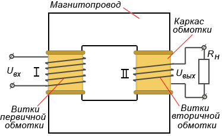
Для низкочастотных трансформаторов материалом магнитопровода служит пермаллой, трансформаторная сталь. Для более высокочастотных – феррит. У высокочастотных маломощных трансформаторов роль сердечника может выполнять воздушная среда. Дело в том, что с ростом частоты преобразования габариты магнитопровода резко уменьшаются.
Если сравнить трансформатор лампового телевизора с силовым трансформатором, который установлен в современном полупроводниковом телевизоре, то разница будет ощутима. Трансформатор лампового телевизора весит несколько килограммов, высокочастотный трансформатор современного телевизора несколько десятков или сотен граммов.
В современной электронике понижение напряжения осуществляется с помощью высокочастотых импульсных преобразователей, где трансформатор преобразует ток частотой в 20 – 40 кГц, это и позволяет уменьшить размеры магнитопровода (сердечника), снизить затраты на медный провод. В старых ламповых телевизорах трансформаторы работали на частоте 50 Гц, что вносило необходимость использовать массивные многокилограммовые трансформаторы.
Трансформаторы бывают однофазные и трехфазные. Что это означает? Есть переменный ток, который течет по четырем проводам - три фазы и ноль - это и есть трехфазный электрический ток. А есть переменный ток, который течет по двум проводам - фаза и ноль - это однофазный ток. Для того, чтобы из трехфазного сделать однофазный, достаточно взять один провод трехфазного и его другой провод - ноль. Однофазный электрический ток поступает в Ваши дома. В розетке электросети переменный однофазный электрический ток 220 В.
Принцип работы трансформатора
Принцип работы трансформатора основан на явлении электромагнитной индукции. Если на первичную обмотку подать переменное напряжение U1, то по виткам обмотки потечет переменный ток I0, который вокруг обмотки и в магнитопроводе создаст переменное магнитное поле. Магнитное поле образует магнитный поток Ф0, который проходя по магнитопроводу пересекает витки первичной и вторичной обмоток и индуцирует (наводит) в них переменные ЭДС – e1и e2. И если к выводам вторичной обмотки подключить вольтметр, то он покажет наличие выходного напряжения U2, которое будет приблизительно равно наведенной ЭДС e2 (рис. 3).
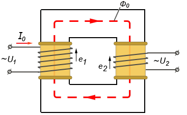
При подключении к вторичной обмотке нагрузки, например, лампы накаливания, в первичной обмотке возникает ток I1, образующий в магнитопроводе переменный магнитный поток Ф1изменяющийся с той же частотой, что и ток I1. Под воздействием переменного магнитного потока в цепи вторичной обмотки возникает ток I2, создающий в свою очередь противодействующий согласно закону Ленца магнитный поток Ф2, стремящийся размагнитить порождающий его магнитный поток (рис. 4).
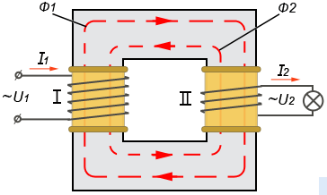
В результате размагничивающего действия потока Ф2в магнитопроводе устанавливается магнитный поток Ф0равный разности потоков Ф1 и Ф2и являющийся частью потока Ф1, т.е.
Ф0=Ф1-Ф2
Результирующий магнитный поток Ф0обеспечивает передачу магнитной энергии из первичной обмотки во вторичную и наводит во вторичной обмотке электродвижущую силу e2, под воздействием которой во вторичной цепи течет ток I2. Именно благодаря наличию магнитного потока Ф0 и существует ток I2, который будет тем больше, чем больше Ф0. Но и в то же время чем больше ток I2, тем больше противодействующий поток Ф2 и, следовательно, меньше Ф0.
Из сказанного следует, что при определенных значениях магнитного потока Ф1 и сопротивлений вторичной обмотки и нагрузки устанавливаются соответствующие значения ЭДС e2, тока I2 и потока Ф2, обеспечивающие равновесие магнитных потоков в магнитопроводе, выражаемое формулой приведенной выше.
Таким образом, разность потоков Ф1 и Ф2 не может быть равна нулю, так как в этом случае отсутствовал бы основной поток Ф0, а без него не мог бы существовать поток Ф2 и ток I2. Следовательно, магнитный поток Ф1, создаваемый первичным током I1, всегда больше магнитного потока Ф2, создаваемого вторичным током I2.
Величина магнитного потока зависит от создающего его тока и от числа витков обмотки, по которой он проходит.
Напряжение, которое выдает нам трансформатор на вторичной обмотке, зависит от количества витков, которые намотаны на первичной и вторичной обмотке!
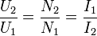
где
U2 - напряжение на вторичной обмотке
U1 - напряжение на первичной обмотке
N1 - количество витков первичной обмотки
N2 - количество витков вторичной обмотки
I1 - сила тока первичной обмотки
I2 - сила тока вторичной обмотки
Из этой формулы можно сделать вывод: увеличиваем напряжение – уменьшается ток, уменьшаем напряжение – увеличивается ток.
Отношение напряжений между первичной и вторичной обмотками называют коэффициент трансформации.
В трансформаторе соблюдается закон сохранения энергии, то есть какая мощность в трансформатор заходит, такая и выходит.
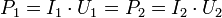
Для переменного тока мощность определяется также, но только вместо постоянного напряжения берется среднеквадратичное напряжение.
Мощность трансформатора зависит от размеров сердечника, рабочей частоты преобразования.
Трансформаторы, которые выдают одинаковые напряжения на выходе и на входе, называют разделительными (развязывающими) (рис. 5).
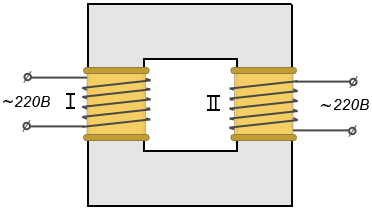
Если вторичная обмотка содержит больше витков, чем первичная, то развиваемое в ней напряжение будет больше напряжения, подаваемого на первичную обмотку, и такой трансформатор называют повышающим (рис. 6). У повышающего трансформатора вторичная обмотка наматывается более тонким проводом, чем первичная, так как максимальный ток вторичной обмотки будет меньше тока первичной обмотки.
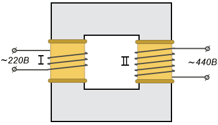
Если же вторичная обмотка содержит меньшее число витков, чем первичная, то и напряжение ее будет меньше, чем напряжение подаваемое на первичную обмотку, и такой трансформатор называют понижающим (рис. 7). Первичная обмотка понижающего трансформатора всегда будет намотана более тонким проводом, чем вторичная. Связано это с тем, что при понижении напряжения возможно увеличение тока во вторичной обмотке, следовательно, нужен провод большего сечения.
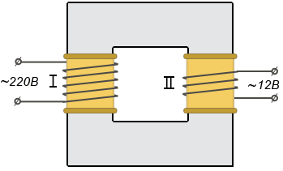
Магнитопровод. Магнитные материалы
Назначение магнитопровода заключается в создании для магнитного потока замкнутого пути, обладающего минимальным магнитным сопротивлением. Поэтому магнитопроводы для трансформаторов изготавливают из материалов, обладающих высокой магнитной проницаемостью в сильных переменных магнитных полях. Материалы должны иметь малые потери на вихревые токи, чтобы не перегревать магнитопровод при достаточно больших значениях магнитной индукции, быть достаточно дешевыми и не требовать сложной механической и термической обработки.
Магнитные материалы, используемые для изготовления магнитопроводов, выпускаются в виде отдельных листов, либо в виде длинных лент определенной толщины и ширины и называются электротехническими сталями. Листовые стали (ГОСТ 802-58) изготавливаются методом горячей и холодной прокатки, ленточные текстурованные стали (ГОСТ 9925-61) только методом холодной прокатки.
Также применяют железноникелевые сплавы с высокой магнитной проницаемостью, например, пермаллой, перминдюр и др. (ГОСТ 10160-62), и низкочастотные магнитомягкие ферриты.
Для изготовления разнообразных относительно недорогих трансформаторов широко применяются электротехнические стали, имеющие небольшую стоимость и позволяющие трансформатору работать как при постоянном подмагничивании магнитопровода, так и без него. Наибольшее применение нашли холоднокатаные стали, имеющие лучшие характеристики по сравнению со сталями горячей прокатки.
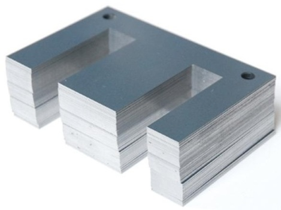
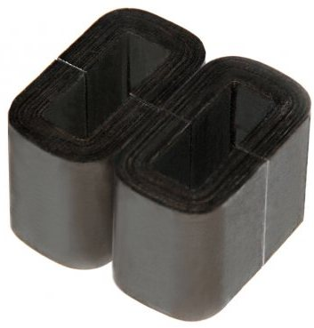
Сплавы с высокой магнитной проницаемостью применяют для изготовления импульсных трансформаторов и трансформаторов, предназначенных для работы при повышенных и высоких частотах 50–100 кГц.
Недостатком таких сплавов является их высокая стоимость. Так, например, стоимость пермаллоя в 10 – 20 раз выше стоимости электротехнической стали, а пермендюра – в 150 раз. Однако в ряде случаев их применение позволяет существенно снизить массу, объем и даже общую стоимость трансформатора.
Другим их недостатком является сильное влияние на магнитную проницаемость постоянного подмагничивания, переменных магнитных полей, а также низкая стойкость к механическим воздействиям – удар, давление и т.п.
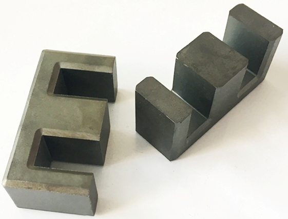
Из магнитомягких низкочастотных ферритов с высокой начальной проницаемостью изготавливают прессованные магнитопроводы, которые применяют для изготовления импульсных трансформаторов и трансформаторов, работающих на высоких частотах от 50 – 100 кГц. Достоинством ферритов является невысокая стоимость, а недостатком является низкая индукция насыщения (0,4 – 0,5 Т) и сильная температурная и амплитудная нестабильность магнитной проницаемости. Поэтому их применяют лишь при слабых полях.
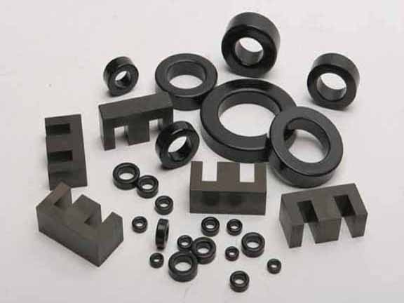
Выбор магнитных материалов производится исходя из электромагнитных характеристик с учетом условий работы и назначения трансформатора.
Типы магнитопроводов
Магнитопроводы трансформаторов разделяются на шихтованные (штампованные) и ленточные (витые), изготавливаемые из листовых материалов и прессованные из ферритов.
Шихтованные магнитопроводы набираются из плоских штампованных пластин соответствующей формы. Причем пластины могут быть изготовлены практически из любых, даже очень хрупких материалов, что является достоинством этих магнитопроводов.
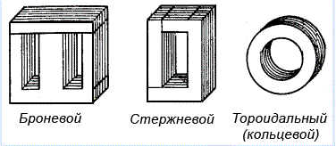
Ленточные магнитопроводы изготавливаются из тонкой ленты, намотанной в виде спирали, витки которой прочно соединены между собой. Достоинством ленточных магнитопроводов является полное использование свойств магнитных материалов, что позволяет уменьшить массу, размеры и стоимость трансформатора.
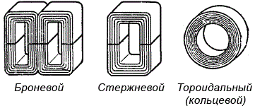
По конструктивному исполнению, в зависимости от типа магнитопровода, трансформаторы подразделяются на стрежневые, броневые и тороидальные. При этом каждый из этих типов может быть и стрежневым и ленточным.
Стержневые трансформаторы
В магнитопроводах стержневого типа обмотки располагается на двух стержнях (стержнем называют часть магнитопровода, на которой размещают обмотки). Это усложняет конструкцию трансформатора, но уменьшает толщину намотки, что способствует снижению индуктивности рассеяния, расхода проволоки и увеличивает поверхность охлаждения.
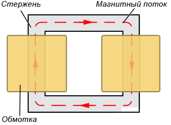 |
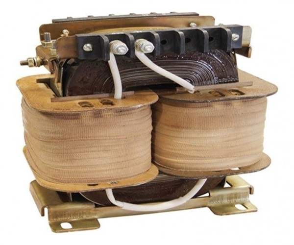 |
Стержневые магнитопроводы используют в выходных трансформаторах с малым уровнем помех, так как они малочувствительны к воздействию внешних магнитных полей низкой частоты. Это объясняется тем, что под влиянием внешнего магнитного поля в обеих катушках индуцируются напряжения, противоположные по фазе, которые при равенстве витков обмоток компенсируют друг друга. Как правило, стержневыми выполняются трансформаторы большой и средней мощности.
Броневые трансформаторы
В магнитопроводе броневого типа обмотка располагается на центральном стержне. Это упрощает конструкцию трансформатора, позволяет получить более полное использование окна обмоткой, а также создает некоторую механическую защиту обмотки. Поэтому такие магнитопроводы получили наибольшее применение.
|
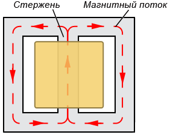 |
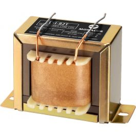 |
Некоторым недостатком броневых магнитопроводов является их повышенная чувствительность к воздействию магнитных полей низкой частоты, что делает их малопригодными к использованию в качестве выходных трансформаторов с малым уровнем помех. Чаще всего броневыми выполняются трансформаторы средней мощности и микротрансформаторы.
Тороидальные трансформаторы
Тороидальные (кольцевые) трансформаторы (рис. 15) позволяют полнее использовать магнитные свойства материала, имеют малые потоки рассеивания и создают очень слабое внешнее магнитное поле, что особенно важно в высокочастотных и импульсных трансформаторах. Но из-за сложности изготовления обмоток не получили широкого применения. Чаще всего их делают из феррита.
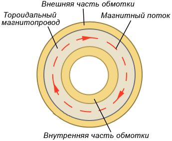 |
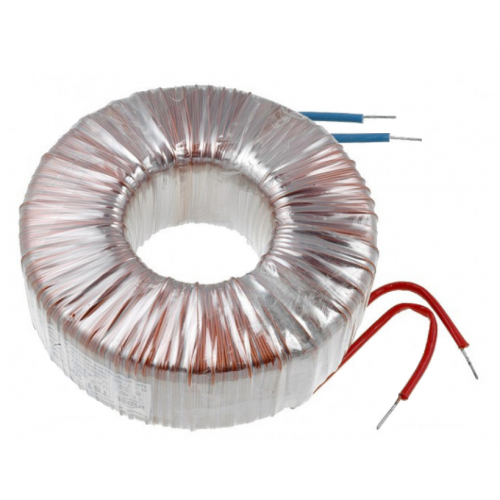 |
Для уменьшения потерь на вихревые токи шихтованные магнитопроводы набираются из штампованных пластин толщиной 0,35 – 0,5 мм, которые с одной стороны покрывают слоем лака толщиной 0,01 мм или оксидной пленкой.
Лента для ленточных магнитопроводов имеет толщину от нескольких сотых до 0,35 мм и также покрывается электроизолирующей и одновременно склеивающейся суспензией или оксидной пленкой. И чем тоньше слой изоляции, тем плотнее происходит заполнение сечения магнитопровода магнитным материалом, тем меньше габаритные размеры трансформатора.
Конструкция магнитопроводов
По конструкции магнитопровода определяется конструкция трансформатора и поэтому название магнитопровода переносится на название трансформатора. Промышленностью изготавливаются броневые, стержневые, тороидальные (кольцевые) магнитопроводы, а также магнитопроводы сложных (специальных) конфигураций.
Для изготовления большинства трансформаторов применяются магнитопроводы следующих типов: Ш – броневой магнитопровод; ШЛ – броневой ленточный магнитопровод; П – стержневой магнитопровод; ПЛ – стержневой ленточный магнитопровод; О – тороидальный магнитопровод; ОЛ – тороидальный (кольцевой) ленточный магнитопровод и т.д.
Для питания радиоэлектронной аппаратуры широкое применение нашли броневые трансформаторы типов Ш, ШЛ, О, ОЛ. В броневом трансформаторе используется всего одна катушка, расположенная на среднем стержне, и все обмотки находятся на катушке, что дает полное заполнение окна магнитопровода обмоточным проводом, частичную защиту обмоток от механических повреждений и хорошее магнитное экранирование.
Пластины, из которых собирают броневые магнитопроводы, изготавливают из листовых электротехнических сталей путем резки или штамповки. Наиболее широко используются шихтовые (пластинчатые) магнитопроводы Ш-образной формы и ленточные магнитопроводы, состоящие из отдельных частей С-образной (U-образной) формы.
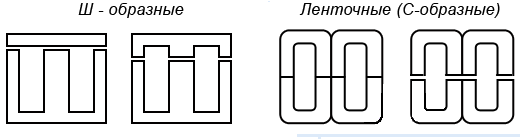
Толщина листов магнитных материалов зависит от частоты, на которую рассчитывается трансформатор. Чем меньше толщина листа, тем слабее частотная зависимость проницаемости и меньше потери в магнитопроводе, но тем выше стоимость материала. Так, например, уменьшение толщины проката электротехнической стали с 0,35 до 0,05 мм повышает ее стоимость в 5 раз.
Поэтому можно считать, что для каждого типа трансформатора и диапазона частот существует оптимальная толщина, при которой обеспечиваются необходимые параметры трансформатора при наименьшей стоимости. Для выбора толщины листов (мм) можно воспользоваться следующими ориентировочными данными:
50 Гц …. 0,35 – 0,5 мм
400 – 500 Гц …. 0,1 – 0,2 мм
1000 – 2500 Гц …. 0,05 – 0,1 мм
До 100 кГц …. 0,02 – 0,05 мм.
Более высоким частотам соответствуют меньшие значения толщины листов.
Сборка магнитопроводов из штампованных пластин выполняется двумя способами: встык (с зазором) или вперекрышку (в переплет).
Сборка встык применяется для получения определенного немагнитного зазора, например, в дросселях или трансформаторах, работающих с постоянным подмагничиванием. Как правило, при сборке встык даже при очень плотном стягивании магнитопровода зазор между Ш-образными и прямоугольными пластинами получается в пределах 0,02 – 0,05 мм.
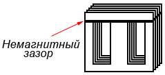
Сборка вперекрышку применяется когда такой зазор не нужен, т.е. когда необходимо уменьшить магнитное сопротивление магнитопровода. Пластины укладываются в ряд таким образом, чтобы места стыков перекрывались пластинами следующего слоя. Причем в каждом слое укладывают пластины двух типов – одну Ш-образную и одну прямоугольную.
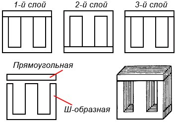
Тороидальные (кольцевые) магнитопроводы собираются из отдельных штампованных колец.
Ленточные магнитопроводы изготавливают из узкой ленты электротехнической стали или специальных сплавов. Ленты набирают в пакеты разной длины и толщины, а затем пакеты гнут или навивают на оправку определенного размера: для тороидальных магнитопроводов навивают на круглую оправку, для броневых и стержневых на прямоугольную. Но из-за сложности изготовления обмоток для ленточных магнитопроводов их разрезают на две половины, что дает возможность наматывать обмотки трансформаторов отдельно и затем вставлять в них половинки магнитопровода, но при этом в магнитную цепь вводится неизбежный магнитный зазор.
Так как ленточные магнитопроводы собираются в стык, то для получения наименьшего магнитного сопротивления в местах стыка их торцевые поверхности шлифуют, а при сборке обе части склеиваются специальной ферромагнитной пастой. Применение пасты позволяет понизить требования к качеству механической обработки стыков и значительно упрощает их изготовление и сборку.
Стягивание магнитопровода маломощных трансформаторов производится металлической скобой, тогда как магнитопроводы более мощных трансформаторов стягиваются специальными планками, при помощи болтов стяжек. Стягивающее устройство должно обладать необходимой механической прочностью и обеспечивать прочное соединение деталей магнитопровода.
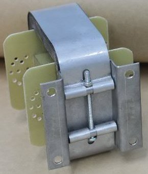
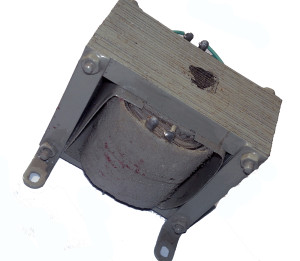
Защита трансформаторов от климатических условий осуществляется пропиткой обмоток или пропиткой целого трансформатора изоляционными лаками. В процессе пропитки заполняются микроскопические поры изоляционных материалов, а также мелкие промежутки между витками обмоток, слоями волокнистой изоляции и конструктивными элементами трансформатора. Пропитка не только улучшает влагостойкость обмотки, но и увеличивает ее механическую и электрическую прочность, повышает допустимую температуру нагрева и теплопроводность.
Однако только одна пропитка не всегда может обеспечить полной защиты обмоток от влаги, поэтому торцы катушек дополнительно заделывают изоляционными замазками (пастами), специальными обволакивающими составами или опрессовывают. Если же трансформатор предполагается использовать в нормальных или близких к нормальным условиях, то пропитка может отсутствовать.
При повышенных требованиях к влагостойкости применяют герметизацию, которая обеспечивает полную изоляцию трансформатора от окружающей среды непроницаемой оболочкой, выполненной из металла и залитой специальным изоляционным составом, например, эпоксидными или полиуретановыми смолами.
Виды обмоток трансформаторов
Обмотки выполняется обмоточным проводом круглого сечения, покрытым эмалевой или эмалево-волокнистой изоляцией. В качестве обмоточного провода используют алюминий или медь, но в основном медь, которая обладает наименьшим сопротивлением по сравнению с другими проводниковыми материалами.
Существуют два различных способа выполнения обмоток – многослойная и галетная (дисковая).
Многослойная обмотка наматывается непрерывно до получения заданного количества витков и располагается по всей длине стержня магнитопровода или его части, отведенной для данной обмотки. Разновидностью многослойной обмотки является секционная обмотка, которая разбивается на ряд секций, где каждая секция занимает часть длины стержня, но все вместе они составляют единую обмотку.
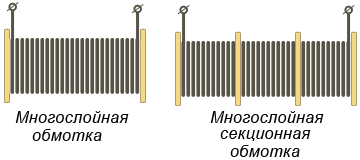
Многослойная обмотка отличается простотой выполнения и может быть намотана на каркасе или быть бескаркасной. При намотке на каркас провод укладывают беспорядочным расположением витков – намотка «внавал» или укладывают правильными рядами – рядовая намотка.
Намотка внавал проще в производстве, но из-за возможного западания отдельных витков в толщу намотки может понизится электрическая прочность обмотки. Как правило, такая намотка используется при изготовлении броневых трансформаторов малой мощности. На рисунке 22 показано схематичное заполнение каркаса витками обмоточного провода, а числами обозначена нумерация витков, показывающая, как витки провода могут укладываться при их намотке внавал.
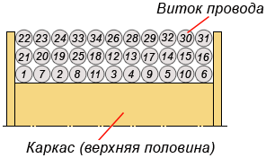
При рядовой намотке провод укладывается виток к витку и каждый слой прокладывают изолирующей прокладкой, например, из конденсаторной или кабельной бумаги, что повышает электрическую и механическую прочности.
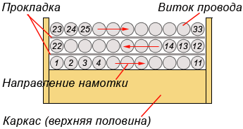
При рядовой намотке можно отказаться от сложного каркаса и производить укладку провода на простую цилиндрическую гильзу, закрепляя витки клеем или лаком. Для повышения прочности каждый последующий слой делается короче предыдущего на 0,5–1 мм и такая бескаркасная намотка удобна для массового производства.
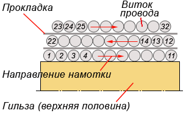
Галетная обмотка выполняется в виде отдельных элементов, галет, где каждая галета представляет собой полностью законченную деталь. Галеты одна за другой нанизываются на стержень магнитопровода и соединяются между собой электрически или иным способом. Отдельные галеты могут изготавливаться независимо одна от другой, что допускает возможность замены отдельных секций трансформатора во время ремонта.
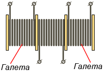
Обмотки трансформаторов должны быть хорошо изолированы как от магнитопровода, так и друг от друга. Изоляция обмоток от магнитопровода осуществляется при помощи каркасов (катушек), изготавливаемых из листовых изоляционных материалов с хорошей электрической и механической прочностью, например, электрокартона, прессшпана, гетинакса, различных изоляционных пластмасс.
Выбор материала каркаса определяется его стоимостью, удобством обработки и теплостойкостью, а конструкция каркаса определяется способом намотки и устройством выводов. Намотка внавал требует применения каркаса в виде катушки, тогда как бескаркасная намотка выполняется на простых цилиндрических каркасах (гильзах), склеенных из кабельной бумаги. Широкое применение нашли склеенные и составные каркасы из листовых материалов. Конструкции различных каркасов показаны на рисунке 26.
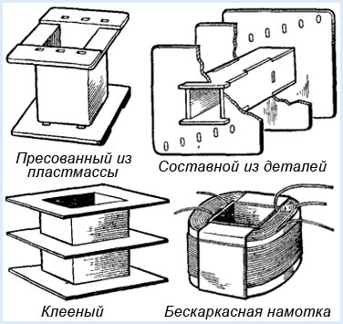
Выводы концов обмоток могут выполняться
- непосредственно обмоточным проводом, выпущенным из катушки на необходимую длину или специальным изолированным проводом;
- специальными ленточными выводами, укрепленными на внешней изоляции обмотки;
- при помощи специальных контактов, укрепленных на щечках каркаса или элементах магнитопровода.
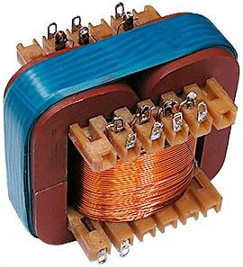
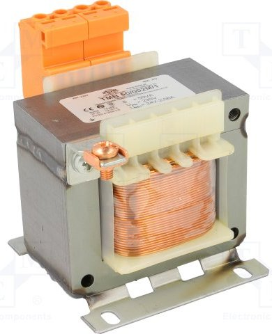
Обозначение трансформаторов на схемах
На принципиальных схемах обмотки трансформатора обозначают катушками индуктивности, расположенных близко одна от другой, а магнитопровод – линией между катушками. Низкочастотные трансформаторы со стальными магнитопроводами и магнитопроводами из железоникелевых сплавов, например, пермаллоя, на схемах обозначаются буквой «Т», а обмотки трансформаторов обозначаются римскими цифрами. Иногда используют условную нумерацию их выводов в соответствии с маркировкой указанной на корпусе трансформатора.
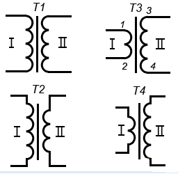
В радиочастотной технике обмотки высокочастотных трансформаторов нередко являются элементами колебательных контуров и фильтров, поэтому на схемах им присваивают буквенное значение катушек индуктивности «L». Высокочастотные трансформаторы могут быть как с магнитопроводом, так и без него, а их обмотки (катушки) могут располагаться на одном или разных каркасах, но очень близко друг к другу.
Если магнитопровод является общим для всех обмоток, то на схемах его обозначают прерывистой линией
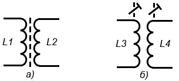
Возможность подстройки индуктивности катушек изменением положения магнитопровода отображают знаком подстроечного регулирования, который пересекает символы обмоток (рис. 30, а), а чтобы показать индуктивную связь между катушками, их символы пересекают знаком регулирования (рис. 30, б).
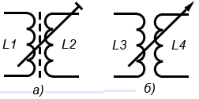
В приемной и передающей радиоаппаратуре для корректной работы некоторых блоков, содержащих трансформаторы, иногда требуется знать фазировку обмоток, т.е. порядок подключения выводов. В таких случаях на принципиальных схемах начало обмоток трансформаторов и катушек индуктивности обозначают жирной точкой, которую ставят у соответствующего вывода (рис. 31).
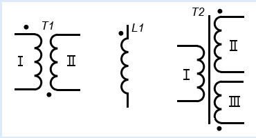
Силовые трансформаторы могут иметь несколько вторичных обмоток с различными напряжениями, но общее количество обмоток обычно не превышает 4-5 (рис. 32).
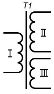
Некоторые устройства, питающиеся от сети переменного тока (коллекторные электродвигатели, сварочные аппараты и т.п.), создают интенсивные помехи, которые через электрическую сеть и силовой трансформатор могут проникнуть в аппаратуру и нарушить ее работу. Для ослабления этих помех между первичной (сетевой) и остальными обмотками помещают электростатический экран, представляющий собой незамкнутый виток из полоски медной или алюминиевой фольги или один слой изолированного провода. Вывод экрана соединяют с шасси или с общим проводом (корпусом) прибора, а наличие экранирующей обмотки изображают штриховой линией, параллельной символу магнитопровода, со знаком корпуса прибора на конце.
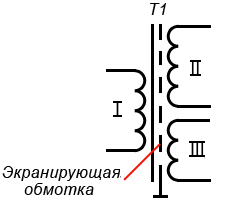
Иногда для работы в измерительной и бытовой аудиоаппаратуре обмотку трансформатора экранируют путем размещения внутри металлического футляра (экрана) из магнитного материала, который также соединяют с шасси или с общим проводом (корпусом) прибора.
Как расчитать параметры трансформатора
Источники:
ruselectronic.com - Устройство трансформатора
go-radio.ru - Трансформатор. Назначение трансформатора и его виды. Обозначение на схеме
sesaga.ru - Устройство и принцип работы трансформатора
Литература:
- В. А. Волгов – «Детали и узлы радио-электронной аппаратуры», Энергия, Москва 1977 г.
- В. Н. Ванин – «Трансформаторы тока», Издательство «Энергия» Москва 1966 Ленинград.
- И. И. Белопольский – «Расчет трансформаторов и дросселей малой моности», М-Л, Госэнергоиздат, 1963 г.
- Г. Н. Петров – «Трансформаторы. Том 1. Основы теории», Государственное Энергетическое Издательство, Москва 1934 Ленинград.
- В. Г. Борисов, – «Юный радиолюбитель», Москва, «Радио и связь» 1992 г.